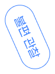
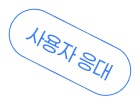
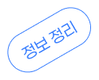
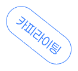

LEE YUN SEO
UIUX DESIGNER PORTFOLIO
Make it Clear.
LEE YUN SEO
UIUX DESIGNER PORTFOLIO
Make it Clear.
SCROLL
INDEX
About Me
사람을 응대하고 정보를 전달하던 경험을 바탕으로,
사용자의 불편을 설계로 해결하는 UI/UX 디자이너입니다
이윤서
UI/UX 디자이너
My Approach
정보를 쉽게 전달하는 방식에 대한 관심을 바탕으로, 기존 서비스의 불편을 직접 찾고 유사 사례와 AI 도구를 활용해 더 나은 화면 흐름을 제안합니다.
Education
-
그린컴퓨터아카데미 AI 활용 반응형 웹 UI/UX 제작 과정26.02 - 26.07
-
을지대학교 안경광학과 졸업19.03 - 23.02
Experience
-
분당연세플러스안과 검안팀 근무 전반적인 안과 검사, 렌즈 검사 및 사용자 응대23.03 - 25.11
-
을지대학교 학보사 학생기자 및 편집장 / 기사 기획, 작성, 편집, 일정 관리, 협업19.04 - 21.12
Certificate
-
웹디자인개발기능사 필기 합격 / 실기 준비 중26.04
-
GTQ 1급26.03
-
JLPT N426.08
-
안경사 면허증23.02
-
컴퓨터활용능력 2급22.07
Skills
- Design Figma, Photoshop, Illustrator
- Web HTML, CSS, VS Code, Vercel
- Collaboration Notion, Google Sheets, GitHub
- AI-assisted ChatGPT, Claude, AI Image Tool, Powershell

Why UI/UX?




사용자의 불편을 관찰했던 경험과
정보를 쉽게 정리해 전달했던 경험을 바탕으로 UI/UX에 관심을 갖게 되었습니다.
이제는 문제를 이해하는 데서 나아가, 화면 구조와 서비스 흐름으로 불편을 개선하는 디자이너로 성장하고자 합니다.
Project
- 모카클래스 반응형 웹 UX 개선
- 시스템치과 반응형 웹 UX 개선
- 러닝 기록 앱 기획 및 제작
- 디지털 디톡스 앱 기획 및 제작